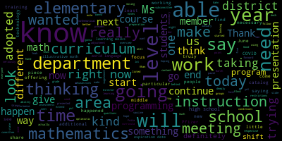
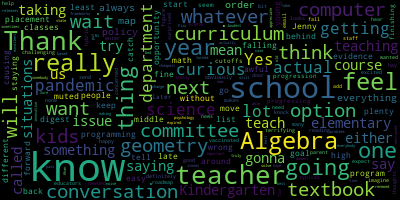
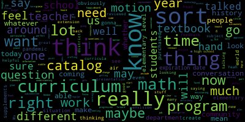
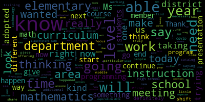
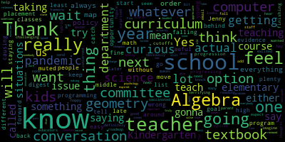
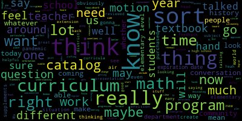

total time: 7.92 minutes
total words: 1154

total time: 13.81 minutes
total words: 1994

{kind=link}
total time: 4.24 minutes
total words: 720

{kind=link}
total time: 14.05 minutes
total words: 2192

[Van der Kloot]: Hey, is everybody here? Yes. Yes. OK. Close. Sorry, I had a little technical difficulty. So let me just get this up. Okay, thanks everybody for joining us. I'm on my cell phone right now having a little bit of a problem, but we'll start off here. Today, the curriculum subcommittee meeting is called to order. The purpose of this meeting is to review the math curriculum K to 12 in the Medford Public Schools. Pursuant to Governor Baker's March 12, 2020 order, suspending certain provisions of the open meeting law, and the Governor's March 15 order imposing strict limitations on the number of people that may gather in one place, this meeting of the Medford School Committee will be conducted via remote participation to the greatest extent possible. specific information and the general guidance for remote participation by members of the public and or parties with the right and a requirement to attend this meeting can be found at the city of Medford website www.medfordmass.org. For this meeting members of the public who wish to listen or watch the meeting may do so by accessing the meeting link contained herein. No in-person attendance of meetings with the public will be permitted, but every effort will be made to ensure that the public can adequately access the proceedings in real time via technological means. In the event that we are unable to do so, despite best efforts, we will post on the City of Medford Community Media websites, an audio or video recording transcript or other comprehensive record of proceedings as soon as possible after the meeting. after the meeting. So the Medford, if you need to call in, the number is 312-626-6799. And the Zoom meeting ID is 965-1022-5227. Okay, thank you. Can we please stand for the Pledge of Allegiance? I pledge allegiance to the flag of the United States of America and with liberty and justice for all. Thank you. Sorry, I'm just a little confused because I had some problems, so excuse me. Can we start off? And superintendent, if you could take it away.
[Edouard-Vincent]: Good afternoon, everyone. Thank you for joining us for today's curriculum subcommittee meeting. Today we are going to be taking a close look at mathematics instruction. Our Director of Mathematics, Ms. Faiza Khan, is going to be taking us through a slide deck, which will really talk about you know, give us a quick overview of mathematics, the shifts that have happened, where we are, what are the specific standards that have to be met at the state level, and then she's going to dive into mathematics instruction. and the programming that is used at elementary, middle school level, and high school level. And at the end of the presentation, she will share some goals and next steps for the math department and what it is that they are hoping to do to continue the work that they have been doing. So I'm going to pass it on to Ms. Khan right now. And you should have screen sharing. You should have the ability to share you are listed as a co host. Thank you.
[Khan]: Thank you. Thank you, Dr. Vincent. And thank you to everybody who is here today. Can you hear me? Yes. Okay, perfect. So I will start sharing my screen. Let's see. Okay, I am not too sure where it is here. I have pulled it up. Let me see. Well. So I have it pulled up in Safari, but it's not, it's making me go through the system preferences and whatnot. Is someone else- I can share it.
[Edouard-Vincent]: I'll ask Dr. Cushing just to make me a host. Give me one second and I can share it. Thank you.
[Khan]: Great, thank you. Thank you, Dr. Vincent. So here we are. Welcome. I'm happy to be doing this presentation because I feel like it was long overdue. So as Dr. Vincent said, I will be talking about how math looks like right now in Medford Public Schools. What have we done over the last two years? and how Massachusetts curriculum frameworks have led to a district curriculum, and then the syllabi that we are working off of. So we can move on to the next slide. Thank you. This is another just title slide. Thank you. So as I mentioned, the outline is that we'll talk about Common Core, the curriculum frameworks for Massachusetts, the district curriculum that we have adopted and that we have, and then the district program that we have adopted. The Medford Public Schools Mathematics Department curriculum and instruction, I'll be discussing that over the last two years because I assumed this role late August 2018. We'll be talking about elementary grades and we will also be talking about secondary grades, middle and high school. And then we will close off after talking about equity in mathematics and our future goals and what I have in mind for the next steps for the department. So I'm going to take a step back and It's really important that we look at this visual and really try to understand, you know, where our mathematics district program that we have adopted as a district is coming from. Any program that has been adopted by the mathematics department has been in line with whatever the district approved mathematics curriculum has been at that time. And the district approved mathematics curriculum has always come from Massachusetts, mathematics frameworks, which has been based on Common Core. And it's really important that we distinguish between Massachusetts mathematics frameworks, mathematics curriculum, which is approved by the district, and the district-adopted mathematics program, because I feel that more often than we should, we cross-reference them, and also that we somehow get mixed up between the three different pieces. As you can tell, I'll go to the next slide. Thank you. It's important to understand what is it all based on. So what is Massachusetts Curriculum Frameworks? Massachusetts Curriculum Frameworks for Mathematics has two different kinds of standards, content standards and practice standards. Content standards, they vary with grade. I will not be teaching the same content in grade one as I'll be teaching in grade two. But will I be teaching the same practice standards from different, you know, from grade one to grade three? Yes, I will. They will take a slightly different shape when I look at them in the classroom, but they are the same eight. that have been set from 2011 to 2017, there have been very minor verbal changes, but they have stayed as eight. Whereas content standards have changed, they have varied, they have been, they have modified verbally and in content as well. Massachusetts Curriculum Frameworks for Mathematics, as our previous visual explained, is the superset of district mathematics curriculum. So basically we are deriving our district math curriculum based on Massachusetts frameworks. And one thing to keep in mind is that Massachusetts curriculum frameworks for mathematics is based on common core standards. They were put together by a consortium of states several years ago. Massachusetts as a state has added a few at different grade levels, its own standards, and we'll see it in a slide that's about to come. Massachusetts curriculum frameworks. Actually, I'll still stay on the same slide. Thank you on the previous one. Thank you. They are approved by DESE here in Massachusetts, and it's important that they are approved by DESE. That's the only way we get them. The programs that the district approve and district's own curriculum does not need DESE approval, but it's important that public schools stay in line with DESE's Massachusetts curriculum frameworks. And again, I can't emphasize on this enough that the Massachusetts frameworks are not tied to any particular mathematics programs. DESE provides guidance in choosing programs, but they do not endorse any program either. Thank you. So here's the timeline. Before 1993, states were kind of teaching whatever they wanted. So for example, Massachusetts would get together with another state that they will feel are more in line with their learning priorities and teaching priorities and will you know, form a set of standards and go from there. But with the Education Reform Act of 1993, everybody started thinking about what have we been teaching and are all different states teaching different standards. So when they got together and they discussed it and they kind of had a common baseline that was called the mathematics state curriculum frameworks, it came around in about 1995 1996. Revisions happened in November 2000. More revisions happened in May 2004, but it only happened for grades three, five, and seven. Yet again, another set of revisions, March 2011. And then the final set, the final frameworks that we are dealing with right now is the one that's based on December 2017. And we got it in 2018. So here are the 2010 and basically with minor changes 2017 practice standards. So these are the 2017 one and 2010 were slightly different, but basically they emphasized on the same pieces. All students shall be able to make sense of problems and they need to persevere in solving them. Second one is reason abstractly and quantitatively. Explain reasoning, model through applications, use appropriate tools strategically. That would be tools that students use with hands and any other kind of tools. that we introduce to students. They should attend to precision. They shall be able to look for and make use of structure and they should be looking for repetitions in patterns and calculations. These again, And I'll show you where they're all located. You can look at them at different grade levels, how they look like. But those are the guiding principles when we go into the classrooms or when teachers are teaching to see our students persevering and how are they being encouraged to persevere. One important thing to note about Massachusetts Curriculum Frameworks 2017 is that shifts from 2010 happened at a bigger level at the higher grades of 6 through 11. 12 seemed like it was pre-calculus, so it was not modified much. And the example is that the new grade 8 standards are now more rigorous and incorporate some standards that traditionally have been taught in Algebra I. And because I was teaching mathematics at that time from 2010 to 2018, I have witnessed these shifts my very self. So, and I can talk more about these later, but we can go to the next slide. So the Massachusetts Curriculum Frameworks 2017, there are a few highlights about it. It's a much well-rounded curriculum. And there's a lot of emphasis on literacy now. So basically, we now are giving students a lot more word problems than they have seen in the past. And that actually, ties in with procedural fluency as well. And I'll talk about it later. There's a big emphasis on coherence, focus, and rigor. So basically, the curriculum should be coherent with each other from grade one to grade two to grade three. So we are talking about progression in grades here. It should be focused. In grade one, I should be focusing on such and such. In grade two, I shall be focusing on certain things and then so on and so forth. So, for example, in grade one I shall be talking about integers, in grade two I shall be talking about, you know, divisions of certain numbers, for example, and in grade four instead of just modeling, students shall be able to do fractions by hand. So this is where it is. I have given a link right here. It is right from the Massachusetts curriculum framework. Again, it's a very well-rounded curriculum as claimed by DESE. And yes, in teaching also, it sure is as compared to the 2010 curriculum. Here, again, when we go back to the same slide, it's important that the conceptual understanding, one more slide up, please. Thank you, right here. Conceptual understanding, procedural fluency, and application, they stay together. So in this triangle, you will see the purple one is saying make sense of mathematical concepts. And then procedural fluency is there. And then the third one is application. And the three of them together, basically, the foundation of all of it is rigor. So there's a lot more emphasis on rigor then there was in the 2000 frameworks and it was quoted by the mathematicians that it was a mile wide and only an inch deep. But this one is that the depth of the mathematical concepts increase as you go up in grade levels. And we are not totally discrediting the procedural fluency. It needs to be there too. But it needs to come after conceptual understanding. And the third piece will be now we are able to apply it. So it starts from understanding, goes to procedural fluency, and then it should be application. But the way the visual says it is that all three of them are equally important, and they need to form the mathematical rigor at each grade level. Thank you. So this is the chart where I mentioned that Massachusetts has put in some of their own standards, as you can see in counting and cardinality and operations and algebraic thinking. Massachusetts has some standards in pre-k, it also has it in measurement and data and geometry. Also at fifth grade level, Massachusetts has introduced a couple of standards in the number system. And you can see clearly over here what is being taught at what grade level and how it progresses. As you can see, geometry is extremely important, which it wasn't in the 2001 and in the 2000 curriculum. And we recognized that it's really important. It's a very logical concept and it's not just gonna happen if we start teaching students at the high school. So a little bit of it is spread out through all the grades. These are our high school course offerings and pretty much the 17 courses that are offered at the high school level are here. I can come back to this if needed, but here they are. They are also on the mathematics department website. Thank you. So these are the initiatives. This is what we have been doing since 2018 up until now. We have conducted several math learning walks. They are on pause for this particular school year due to COVID. We saw where we need improvements where we can support our teachers. And I can't wait for these to start back up again because they gave us some very good data. The middle school program review and adoption was completed and elementary school program review and adoption has been paused. We had a committee formed of teachers and we had barely started, you know, just looking at different programs when COVID hit in March. That's when the presentations from the vendors had started. We had formed a rubric as to what will be our criteria. It was in line with DESE, and we have been in talks with DESE to kind of get an idea of when the next curriculum frameworks will be coming in. They don't know yet. So we looked at different rubrics that were used in the towns. And with the teacher input, we basically went with one rubric. That work had started in October of 2019 and it took us good five or six months to get to a rubric, but we were in good place because a lot of that rubric development also needed a little bit of professional development because we want to have an elementary school program that is in line with the middle school program. It is a problem-based, inquiry-based program. And then we were going to go ahead and pilot it. So again, it is paused for this year, but we know where we are at and will hopefully resume it under better conditions. Evaluations of curriculum and instruction, they are ongoing. The inventory of current resources. That's ongoing as well. Transition to inquiry-based, hands-on instructional resources. We are always on the lookout. We are always open-minded. We always encourage people to give us thoughts, give us ideas, because, you know, as I see it, as we see it, It's not just on to the teachers. It's not just up to me. We need parent input. So if any parent or any teacher comes across a tool, a program, we are more than happy to look into it and make them partners in our teaching and learning. Elementary school summer math calendars were given out in June of 2019. And in June of 2020, we had a good success rate with the collection of the summer calendars. Last year in 2020, we did not have that much luck this year, but they were there in case anybody was interested. So for elementary grades, under programming, we have the envisions program that was adopted in 2014. As the core program, we still have it. And what we also got was envisions 2020 as a supplemental resource at no cost. Of course, when you get a program at no cost, there are pros and cons to it. But we decided to say yes to that offer because it is a more robust and clearly has a few advantages over 2014. Additional considerations is that we renewed hand visions this year for a cost of $50,000 plus paper materials. anticipated budget request for 2020-2022 will be approximately the same. So I would say budget request for 2021 and 2022 will approximately be the same. My apologies for that mistake. Program Review Committee October 2019 goals and status. I believe I mentioned it. The goal is that we need to stay with the procedural fluency, but before that comes the conceptual understanding and after that comes the application. We want to make sure the new program is in line with that and that it's coherent time to time we hear from our teachers that you know it's just not tying in it's just not connecting and that's why teachers at all different grade levels from different schools. are on that committee of about 20 teachers and administrators are as well so that they can give us the feedback. Our final goal is to make a recommendation to the school committee for adoption of the new program and we are hoping to do it for June 2022. So for the middle school grades, we adopted a new program. The name is illustrative mathematics and it was in June 2019. Before that, the status of the middle schools was that we were using at least three to different middle schools. And one thing was very important for me personally as well was that we are on one platform because we have a goal of having one Medford. And then when we looked at different programs, we saw that illustrative mathematics clearly has major advantages over other programs, which seem to be more procedural. This one was very inquiry-based, and that's how it was from the beginning. It wasn't cut out to pass a certain criteria. The authors wrote illustrative math. They put examples and questions and activities in illustrative math, and then it passed the criteria. So it's like, basically, are you teaching to the test kind of scenario that I was seeing with different programs. There is definitely lots of emphasis on problem-solving, inquiry-based, hands-on activities, and that's for our standard 6th, 7th, and 8th grade classrooms. About 85% of our students fall in that category. The big ideas is for the accelerated program. Additional consideration at the middle school level is that professional development was done in illustrative math two full days in June 2019 before the teachers were going to start using it in end of August beginning of September in 2019 and then we followed up with two hours in the same school year 2019 and 2020 to launch the program. We spent about $25 per student per year on the paper book. The program itself is free and it's all available online for families, for students, and for teachers. It has lesson plans and condensed lesson plans and many resources for the teachers. Um, one thing to keep in mind is that when I say online, uh, people assume, uh, we assume that a lot of it is, uh, that students are doing all the work, um, online. Um, that's not the case. Students still need paper and pencil. They still need to show their work by hand. And teachers use nowadays in during COVID conditions, they are using different technology tools to make that happen. program itself is not just you are constantly working on the computer. Now we can take it as a pro or we can take it as a con but that's where we are with illustrative math. So approximate paper cost per teacher per set is $125. It's a one-time investment. We bought it for all of our special education teachers and all of our English language teachers as well. Approximate PD cost was about $15,000 for the program adoption and coaching. That included my coaching as well. and the coaching of our EL teachers so that they can modify the program as need be for their needs. And then now we can go to the high school. So for the high school grades, the program that we are using that comes as a set of Algebra 1 Geometry and Algebra 2, when we adopt a program for the courses at the high school, we usually look for the sequence that the program offers the sequence of Algebra 1 Geometry and Algebra 2. We have Houghton, Mifflin, Harcourt. And the reason why we do it is because these three courses, of all the others, are the foundations. And we want to make sure they're coherent and they're focused, so we don't go with Pearson in one and Houghton, Mifflin in another one. That was adopted in 2016 and we paid for the program. It's all paid for. The remaining courses use Pearson, McGraw-Hill, HMH, Addison-Wesley, BFW, Prentice Hall, Desi's own binder, and Skylight Publications. for different programs. Additional considerations is that we have invested in new statistics books. These ones come with an online interactive book. So we have the paper book and we have the online version. And it was bought right in time because our students are using it very nicely and teachers are getting used to it in October 2020 we bought it. with $6,000. The HMH program renewal is due in June 2022. We have yet to get a quote on it, but this program that we have in, that we got in 2016, basically we will keep their paper books, but the online piece of it, of the Houghton, Mifflin, Harcourt, the Algebra I Geometry and Algebra II, we will have, we'll no longer have access to it after June of 2022. So we need to think about where we want to go and if we want to renew, you know, what will be the dollar cost associated with it. So the program review committee for that one needs to be formed and the plan is to form it in June 2022 because that's when the elementary school program committee will be ending its work and hopefully will be adopting a program. And I feel that it'll be a good time to start working on this. It usually does not take this long, but because of COVID, the elementary school program review committee we had to put it on pause. So hopefully this will be done by June of 2023 and we will either have a new program or we'll stick to the program that we have. So equity in mathematics. We are fully compliant with the Office of Civil Rights regulations. We do a yearly program curriculum bias sign-off sheet for racial, religious, and gender equity. We do an annual discussion on how to deal with unconscious bias in program and practice through targeted teacher feedback sessions. and in math department meetings. We are committed to an assumptions-free all-inclusive teaching and learning models. We promote co-teaching as much as possible and the professional development and modeling is done by better lessons at the middle school level and at the high school level because it was specially requested from them. In fact, the teacher that we had for our illustrative math program was a special education teacher who gave much feedback on how to include our special population. Our future goals and next steps. We would like to continue the learning walks K through 12 starting in September 2021. We would like to develop a department mission statement because I believe it's important that we have a mission and we keep it in mind. Continued work on developing and updating the core syllabi. As we are adopting new books and as we have 2017 frameworks. The district curriculum was updated in line with the DESE Massachusetts frameworks, but we are working on syllabi of a few courses. We had some technical difficulty that some of them were only in PDF. Now we are working towards them. We are almost done. Continue to research best mathematical practices across the state to incorporate in our classrooms. One thing about the mathematics department, at least at the secondary level, because they only teach mathematics is their continuously researching best mathematical practices. Many teachers at the elementary schools are also constantly engaged in it, and they're very interested in what's happening in the mathematical world, and that's definitely good news for us. We are closely monitoring the new trends in mathematics. Teachers are eager to learn, continue to promote inquiry-based teaching and learning That's the way we see that learning is happening best. Those days are long gone when there was a traditional setup and now until students touch and feel the actual, you know, bits and pieces. And they don't play around with stuff or they don't discuss with each other. They are not where we would like them to be. We would like them to become competitive, more competitive in the world. And I believe that group discussion and inquiry-based teaching is the way to go and group-based learning. We will continue to research and incorporate data driven strategies to minimize learning loss due to COVID-19. I myself am constantly trying to research and look for things that I can give to the teachers. I again, hate to be the bearer of the bad news, but I was reading Education Week just very lately. And it mentioned that the loss in mathematics overall throughout the country is gonna be twice as much as the loss in literacy. So I just wanted to raise the red flag. And I mean, this is where we are right now. We'll continue to strive. But I just wanted to bring it to everybody's attention. And my last slide is saying thank you for your time. And please let me know if you have any questions.
[Van der Kloot]: Pfizer, thank you so much. That was a very comprehensive report with so much information built in. you ended up really on the key point that I think we're all concerned about is what will be the impact of this year. And especially, like I can, if I think about eighth grade, the eighth grade course, we've talked about many, many times how intense that is. And so now those kids have gone on into ninth grade, and I'm wondering what the teachers are telling you and what you're seeing so far.
[Khan]: So teachers are struggling in this way. I mean, they are in charge. They have a lot of resources at their hand. They're working very hard. But the fact of the matter is that there is a decline. The students are not where they are supposed to be from whatever standard, but they are not there. They want to make sure that students are engaged and they are ready for the next grade level. There are many teachers, actually all teachers are concerned that they will have to do a lot of catching up and they are concerned how much below grade level teaching they will have to do. But they are confident that they will put in their best effort. They are willing to go an extra mile for the students and I'm willing to help them. I'm happy to help them. But the fact of the matter is there is a decline that's already very noticeable.
[Van der Kloot]: I'm curious whether you're seeing a difference in the students who are fully remote versus the students who are hybrid.
[Khan]: So that difference has not become very clear yet at the middle school and at the high school level. I believe that if the situation stays so during these winter months and this holiday season, we will be able to better speak about it in February and early March timeframe. Right now, teachers are, you know, using all these different strategies, Jamboard and Flipgrid and Whiteboard, all online to keep them engaged. But I am seriously concerned about this engagement going down during the winter months. And there is some difference, but there are certainly some very motivated students who are remote, and there are some students who are not as engaged, even if they are coming in. But I'm hoping that teachers are are gonna continue working hard with the students and that, you know, students will also not give up. Many of them are responding very positively. So I have hopes.
[Edouard-Vincent]: You're on mute, Ms. Van der Kloot, you're on mute.
[Van der Kloot]: Yeah, I'm having some issues. I can't unmute myself except by the space bar, and I can't go into a gallery view, so I can't see other people's questions. So, Jenny, I'm gonna ask you if you can, can you see, if you can see everybody, could you call on people for questions?
[Ruseau]: You're muted, Jenny.
[Graham]: I'm muted. Okay. Member Ruseau, I think I saw that you had your hand in the air. I have some questions as well.
[Ruseau]: Yes, I did. Thank you. There's an awful lot to digest here. And without getting into the issues around the pandemic, I was curious about the placement of computer science and computer programming in the list. I know that there are some courses that are in the math department, some that aren't. And I was also curious about how young are we going to go with actual computer science curriculum? There's plenty of evidence, I think, Kindergarten's fine. We can start in kindergarten. And if we wait until high school or late middle school, then what we have is the people who know how to program taking classes so they can get their easy A's. And that's not really the goal of any of this.
[Khan]: That's a great question, Mr. Russo, and something that's very close to my heart. I was teaching that AP computer science course before taking on this role. So yes, a pipeline would be wonderful. It'll be great. Students can start very early and very young. What DESE has done recently is that they have created a digital literacy set of standards. that do not fall under mathematics any longer. There are certain courses that they have said it's okay to take for math credit or for science credit. So the two courses that fall in the mathematics department, they are in the mathematics department, but if students request a science credit for it, we are happy to give it to them. The reason why they have stayed in the mathematics department is that traditionally a mathematics teacher has taught these courses and also because, according to Desi's guidelines and the licensure pieces that that there is a certain amount of time that teachers can teach outside of their content area. And so the teachers would teach at the high school, three levels of the three sections of mathematics and one section of computer. That's how I did it. But lately they have shifted their standards and their requirements. So that's a little fluid right now, but just so you know, that's where we are at. And yes, creating a pipeline is great. I know Molly Ladin has put in a lot of effort in getting this off the ground. I'm happy to be her partner, but because she's in technology, we had decided that it's best served. by her and her crew. She has introduced a few courses also in computer science and, for example, computer science principles, which is not as rigorous, but it is still an AP course and it's not language based. This course that falls under the mathematics department is based on Java. So you need to know Java very well in order to teach it. And again, the way I always felt as a teacher of that course is that it will be great to have students have, you know, even a semester long course before they enter into into this, but that's again something that me and Molly are talking about and had it been better times. we would have definitely proceeded on with it. But any other things, we partner with each other and I'm happy to support her in any way, shape or form.
[Van der Kloot]: Thank you.
[Graham]: I had some questions as well. So I'm gonna go ahead and ask them now, because I don't see any other hands in the air. So Faiza, I know that the work that you were doing around elementary school math was an effort to evaluate the replacement of envisions. And obviously that's sort of waylaid, but like envisions gets pretty terrible marks in the curriculum world. And by the time this is done, we will have lost an entire like school full of elementary school students to a curriculum that isn't even up to standard minimally. So I just feel like that makes the teachers have to work that much harder to sort of cover the gap, right? So if the curriculum can't stand on its own, then the teachers are faced with having to fill the gap or you are. And I'm not particularly sure like what we would do about that, except that I think we need to temper our expectation that any sort of math outcomes would change unless we are willing to change our foundation. So I've been thinking a lot about that. One of the things that we talked about in terms of this work of the curriculum subcommittee is that we would ultimately create a catalog that would include things like program expiration dates, because it's definitely my sense that sort of behind our expiration dates at this point where we should, you know, in a more perfect world, we would be making these evaluations before our programs expire. And we're faced with, you know, really, we're going to be asking the community to pay for a program to extend next year that we know isn't working. And, you know, it is a pandemic and I'm not really sure what we can do about it in this moment except to say we don't want to be in that situation again and how do we sort of have different rigor so that we get to a better place. You know one thing that we talked about and as part of the approved motion is that this catalog would include not just the program, but also those expiration dates, so that it's a really easy visual to look at and say this is this is the date that we're working towards. as well as whether the curriculum has EL or IEP supplements and whether we have purchased them because it's my understanding that like in history, we haven't always purchased all those supplements. And sometimes it's that they don't exist and sometimes it's that we didn't buy them. So just to start to create that catalog that makes that super clear, not just at the elementary level, but sort of across the board, I think makes a lot of sense. And I think you have the, the beginnings and sort of the guts of that here in this presentation. And then I think my question about some of the high school stuff really goes more toward the another approved motion that is sitting in this committee that isn't necessarily the subject of today, but the subject of math progression and best practices around math progression, especially as you like move from middle to high school. So I just don't want us to lose sight of that important conversation. And I would love to have a meeting dedicated to that topic because I just heard from a friend today that she's got a middle schooler and the math teacher is talking to her about like what she needs to do. So her child ends up in calculus and I thought of you immediately. So I was like, I, I really want to like circle back to that conversation. So I would, I think I would be really interested in that conversation, which is obviously not the posted reason for today, but What I couldn't tell from this presentation and maybe like when we create that catalog, it would be more clear is for the various courses and the textbooks, where are we in terms of like renewal, if renewal is a thing when it comes to like high school textbooks versus like elementary programs and like what should be our priority order as we think about planning and budgeting. So I know that was like a lot of thoughts, but I think my question is like, what's your perspective on like how we do a better job to sort of plan proactively rather than being in this situation that I think you find yourself in fairly new to the job and we all find ourselves in saying we're gonna spend money on things we don't believe are gonna work and we are, having to do extensions when they may or may not serve our students.
[Khan]: So I definitely agree with much of what you said. I do believe having a catalog, having an Excel sheet will definitely help. It'll give a one glance picture of where we are at and that way we are all not You know, trying to go for the same amount of money that same year, you know, that will help us, you know, kind of categorize it. All right. So, you know, this is when this math program is done. So now we can invest in certain because all departments are equally important. I don't want to undermine any of them. So yes, I think that will be a good place to start. And I would say that if this, again, this pandemic would not have hit, you probably would have seen me in March coming to you with an elementary school program because teachers were ready to pilot. And unfortunately, that is what I heard. They were ready. They really were ready. And we were so, you know, ready for those presentations. And then we had to pull a plug on it because there was so much going on that was beyond our control. And so, because we didn't come to you, we are not gonna come to you this March, it's postponed by another year. And yes, we've unfortunately, I feel that teachers do need a baseline program. It might not be the one that we want, but it also provides students with some kind of online access at home as well. So we need to, give them the basics. It's a bullet that we will have to bite, but I believe that we are next year in March, you will most definitely see me. Um, and for that one, and then for the high school one, um, uh, I believe it's, it's a good solid program. Um, the, the textbook is the main thing behind the textbook is basically rigor at the high school for the algebra one geometry and algebra two. So we are in a good place with that statistics is an excellent book. Um, the teachers are really liking it. Students are enjoying it. There are other ones that we will have to review. So for example, advanced algebra and trigonometry might be coming up the pipeline. And discrete mathematics might be coming up the pipeline. But these are also courses that are not defined by DESE. Pre-calculus, we have been looking for a good pre-calculus book for some time and we have asked publishers for it. The ones that we are using are really old, but they are good. They kind of get our students ready for calculus. So we have all of this in mind and we constantly discuss it, but I would say our eyes need to be possibly on the next two programs will be the advanced algebra and trigonometry, if there's a good book out there for it. And I would say, you know, the discrete mathematics one. We do have a book, but it's not in line with what we would like to what are we want our students to achieve. So I can go course by course and give you more details, but I say the bigger chunk is coming with the algebra one geometry algebra to think and also I just wanted to keep you in the loop that as we bought statistics book. books. I realized that the actual paper book only cost about 20 $25 and a six year subscription of the book cost about hundred and 30 something dollars. So this is how publishers have switched it. These books that, you know, are heavy duty hardcover books, they used to cost the department hundred and $20 a piece and not anymore. Now we are seeing a different trend. So I'm very happy to have invested in the statistics books and thank you so much for your generosity and giving an okay to that. Thank you. Mr. Rousseau.
[Ruseau]: Thank you. So getting back to the issue of the falling behind that the pandemic is causing, I feel like there's different situations in the elementary school, kids that are staying in elementary school, I feel like, I mean, you could tell me I'm wrong, but I feel like the opportunity to get them where they are and move them forward to try and catch them up or at least keep them progressing is one thing. But if you're finishing Algebra 1 and you're taking Algebra 2, the Algebra 2 teacher isn't teaching algebra one. So I feel like there's these cutoffs and this progression in the later years that are just seem more challenging to figure out. Do you expect the geometry teacher to teach whatever the typical course before that is? And so are you having conversations in your department about what you're gonna do there? And do you feel like the staff you know, I don't know how many teachers there are. I don't, I don't know if the geometry teacher is only a geometry teacher and doesn't know how to teach algebra, but you know, are you having those conversations and what are your thoughts? Because I just was reading the news today. It's not a good scene. It looks like next fall, we are definitely going to have no kids that are going to be vaccinated. And that's just terrifying to imagine that we're going to enter the next school year, either in hybrid or whatever. And I'm just a bit concerned about what are the options? Do you need something from us to try and help the teachers?
[Khan]: So that is again a very good question and I would say communication is the key with this piece. So I have been in constant communication with the teachers. We have had department meetings and we have also had individual meetings 15 to 20 minutes long as to where are you really feeling the challenge. What did not help us at the high school level was that DESE had announced initially that they will be giving the MCAS, that the juniors that just recently became juniors because they didn't take MCAS in May, they will now be taking it in January. So, we were concerned at the high school level as to how are we going to prepare kids. So should Algebra 2 teacher who is the teacher of a junior and the child, the student will be taking MCAS now in January because they didn't take it in May, should they stop teaching Algebra 2 and start teaching Geometry? Because Geometry, because MCAS is based on Geometry and Algebra 1. So we have had those conversations. Actually, our next meeting is again dedicated to it. So that danger is gone now that it's not happening in January, but it will happen. They did not say it's gone. They just kind of postponed it and haven't told us when it will happen. My suspicion is that it might happen in May with the sophomores. We are dedicating our department meeting just to see what we can do. It's unfortunate that the teachers, educators, dedicated educators who want to emphasize on student learning are going to have to set aside a certain time. to teach to the test. It's really unfortunate. And I feel that this is not a good place to be. This is very unmotivating for an educator, but this is the reality. And that's how we have discussed it. So yes, we are working on plans for not just for the gaps in learning, but also for MCAS. So all teachers are keeping a record of where they are in pacing guide and what's causing the delay and or how much depth did they go in in any topic. So I believe that's really important. So for example, if I'm teaching geometry and I am and geometry has a lot of algebra one embedded in it and a student is unable to do the algebra in it. What do I do? Should I sit and should I review at the beginning of the year or should I embed the the teaching for that gap in the middle. So the National Council of Teachers of Mathematics is constantly in tune with these and their recommendation is that for now, continue to fill in the gaps as need be. So don't, you know, spend first two months in basically reviewing because you'll be behind in teaching your own grade level stuff and that'll be unmotivating again. and a teacher of geometry doesn't want to teach algebra one for first two, three weeks because they'll be behind on their standards. So it's really important to keep these recommendations in mind that are coming to us from experts. We have to keep a very realistic eye on where we are at and our expectations from all different parties in this game. Really important that we don't overestimate and that we keep in mind student engagement and making connections with the students and everything else will come afterwards. That's at least my philosophy.
[Ruseau]: Thank you. That makes me very happy and I'm not surprised. I just really needed to hear you say all that. Thank you.
[Van der Kloot]: I see that the superintendent had her hand up.
[Edouard-Vincent]: Yeah, I had put my hand up a little earlier in regards to the work that's happening in the math department. And in speaking and working with Faiza and her leadership of the math department, the way the middle school team adopted the illustrative math and how that was really rigorous, hands-on, and deeply engaging for the students. You know, we've spoken about, is there a junior version to like an illustrative math that could be adopted at the elementary level? I mean, I'm oversimplifying it, but saying like, that's the direction we wanna move in. And so knowing the professional development that happened and the training that Because the adoption happened right at the end of the school year, we had to, you know, squeeze the training in in June, and like, you know, almost force feed it so quickly in order for the teachers to be accustomed or acclimated to the new curriculum. And so, as Pfizer explained this year, COVID kind of had her put the brakes on it, but that truly was the hope. And the other piece of work that she did which I was very excited about was actually going to other districts with strong mathematical outcomes and looking at what they were using in their particular districts, and then trying to say, hmm, could something like that work in the Medford context? How much training would be necessary for that? And so in planning for today's presentation, where I know to member Graham's point about it's unfortunate now that We had to pause elementary because, you know, Pfizer cannot go to other districts to go look at instruction during the COVID climate. And if you're looking at instruction, we had to pause the learning walks K-12 because you don't wanna have 10 additional administrators and staff traipsing into a classroom on top of six feet of distance. So there were all of these things that really forced us to stop the necessary and important work that does need to happen. So by pausing it until June with the hopes that some people would be vaccinated by June, but to restart the elementary team so they could look at the different curricula that was gonna be before them and hopefully be able to conduct some observations next school year of other districts that either have a way of documenting that this is better programming and the why behind it, so that if the time to do that in-depth work at the elementary level, we know whatever ends up being adopted, K-5 would be all set by 22, spring of 22 to come presented to school committee. And so at that point in time, you know, Pfizer would be able to now focus all of our extra attention on secondary at the high school level and really say, where do we find or where have we identified additional gaps or areas for better curriculum to bring in at the high school level so that when we come up with this progression and have the catalog to say like, this is where we are and this is what is like, the top trend right now in mathematics. So you saw all of the different things that are being used at the secondary level, but there's a large course offering for the students. So I just wanted to reiterate that that's the intention of the work, and then to be able to continue with the mathematical learning walks, which school committee members and member Van der Kloot, some of them had had the opportunity to kind of come in and look for those core actions. And so we did grow at K-12, but again, with these, you know, restrictions. So what member Rousseau just shared, Since we don't really know what's going to happen yet with the vaccine, but we're being very, very optimistic as a district, we do have to start thinking seriously thinking about next year, seriously thinking that if the vaccine truly isn't going to be available for the fall, you know, we need to start thinking about will we have remote learning academy 21, 22, you know, might be much smaller, but we need to start thinking about what instruction is going to look like. And so again, with restrictions and trying to find out about, um, what's gonna happen with the virus, that will impact our ability to do the larger scale instructional learning walks. They can still happen, you know, myself, but right now the conditions under which, you know, the students are being taught where before they were working in groups, you could, you know, see the groups. Now you have some online, some in a breakout room, some working independently, it's just, you know, we're just in this very, very difficult position. And so I just wanted to state that, that it's not that we're not trying to focus deeply on instruction, but given the unusual circumstances of teaching and learning right now under these COVID conditions, we need to just keep that in mind, but we are very optimistic for 21, 22 school year that we will turn the corner at least, and at least be able to kind of get back to a greater sense of normalcy. So those were my comments regarding what was said today. Thank you.
[Van der Kloot]: Jenny, do you see other hands up? Or if not, I've got some more questions.
[Graham]: I don't, but there are a good number of community members here. And I just didn't know if any of you had questions for Ms. Khan. If you just want to throw your hand in the air, we'd be happy to take them.
[Khan]: I also have a couple of, I see a couple of the messages to me. So would you mind if I read them and answer those questions that have come in the messages? Sure, please do. Thank you. So the first one is from Christina McGordy and she says, how is the current version of TURK investigations? I would love to know if this is or could be on the list based on my experience with it in 2000 to 2010. Thank you so much for leading this meeting. So yes, Christina, I tried to reply back. Seems like you are not here, but if anybody knows Christina, please do let her know that investigations three, version three is on our list. And it's actually one of the top ones that we are looking at. because it's very much in line with the philosophy, with the rubric. And so, if that helps. And the second is from Lisa, is that I emailed you during the winter last year and I repeat my offer to assist with program reviews if I can help. I'm a parent of an elementary student, remote third grade at a school and spent 25 years working in high school math publishing at HMH. I worked on, The editorial development of the geometry textbook currently being used at the high school. She sent me her email address. Thank you. Yes, Lisa, I recall you. I have been pleased with the current elementary program, though the reliance on the practice and problem solving workbook has meant minimal opportunity for practice. Yay investigations. That's right. So Investigations is on the list. Absolutely.
[Graham]: The investigations people must have heard we were talking today, Faiza.
[Khan]: Investigations is good and Newton uses it. And I, I think, I believe Brookline is also, was also going to adopt it. Although they did pilot the alpha version of illustrative math at elementary level. But, you know, we need a little bit more stable program, the program that has been tested and tried enough and yet ties in with our middle school rigorous, you know, stronger program. So yes, investigations is on the list just so everybody knows. Thank you. And we do include, we do plan to include parents. It's just that we wanted to go gradual. is that, you know, first the teachers look at it and see if it's, how does it look in the classroom to them? And then there will definitely be some parents on the committee. Absolutely. We might have to reduce the numbers because I'm very happy to see so much involvement, but you know, we, we'll probably have to pick one or two parents from each school, but definitely that's on the plan. Yes.
[Graham]: Great. And Ingrid has her hand up Ingrid.
[Ingrid]: Um, hi. Hi Ingrid. Hi Amis. So you kind of talked about this already a little bit, but I just wanted to ask more details about what the process with the elementary, choosing an elementary curriculum was. At what point did you have to pause? I had the idea that you had already selected a few curriculums that you wanted to pilot this year. I don't know if that's true, and I would like to know more about that. Yes.
[Khan]: That's a great question, Ingrid. And I'm so happy that you and I talked the other day and seemed like you have the similar background as I do. So thank you for being here and taking the time. So the five programs that we were looking at is bridges was one of them. And investigations is another one of them. Envisions 2020, of course, because there are previous publishers. Yes, why not, right? I mean, you know, we have to give everybody a fair chance. We will not take it out because teachers are used to it. So we have to, you know, we want to make it a good mix, the whole end game. So basically our illustrative math was gonna be another one. And I believe there was another one. Why am I forgetting the name of it? But these were four out of the five. And investigations, right? Investigations, bridges, illustrative math, and why am I forgetting? Anyhow, there are five of them. There were five of them. Then we were going to bring it down to three. Then we were going to bring it down to two with parents' help. And then we were going to look at the cost and and and and then it's up to the up to we make the recommendation and the school committee is the one that You know,
[Ingrid]: So the process would be to select two and then you want to pilot two in the school?
[Khan]: Yes, we would ideally like to start piloting with three, but as time passes by, after three or four months, we would say these are our finalists, two of them. That's how districts usually do it. Or they choose two from the very beginning. I just thought three would not be a bad idea because we do have quite a few elementary schools and we want to do some populate throughout the grades. So that no school gets left out. Another thing to keep in mind was that no one school, only one program. Little bit of, all three programs at all different schools so that we get an idea of how our different populations are doing with it. And then, you know, choose one out of the final two and then final one. But we always do recommend two in the end because we have to keep, you know, certain factors in mind and it gives good competition. That's what it is.
[Graham]: And Ms. Kahn, I know that some of the math curricula are increasingly reliant on technology, which probably when you did this initial view, our technology situation was considerably different than it is now. So, there aren't that many silver linings in this pandemic, but being able to evaluate curricula knowing that we are a one-to-one device district. I'm hoping that that sort of opens the doors for you all to really say, this is what our students and teachers need and not feel constrained by like what we may or may not have right now. So my request as you do that is that you don't rule anything out for any reason that if there are resources that are implicit in the success of a program that we just have a conversation about what those are but I think like we did with the science curriculum with FOSS, you know, I sat in on some of those vendor interviews way back when, and there was definite concern about our district's ability slash willingness to like buy the consumables year over year. And I'm so glad that that did not get in the way of the choice that we made because by all accounts, like, you know, the program is really strong, and I know it also is hampered by the pandemic, but I'm so glad that that concern, even though valid and historically accurate, did not get in the way of Mr. Seery coming forward and saying, this is the right curriculum for us, let's do this. And so I would just encourage you not to be encumbered by, whatever thing may hold back a math curriculum, whatever that is.
[Khan]: You have a very good point and we'll definitely keep it in mind. In fact, some teachers did voice it that what are going to be the restraints. So I said, well, currently, you know, I should not use the word luckily, but COVID hit at a time right when we were trying to answer those questions. But none of these five programs we chose based on one or the other. Basically, we went to ed reports, we went to the districts who were high performing as Dr. Vincent said, and that's where our programs came to us because we could learn from those districts firsthand what is working, what's not working. You know, and that was really important for us so that we are not reinventing the wheel, we are not, you know, wasting the educators time in piloting a program that we know is probably not coming highly recommended anyhow. I do see Ingrid's hand up, but I do see Lisa saying Singapore. Singapore math. That's great, Lisa. I'm glad that you are recommending it. I'm not too sure if Singapore math lines up with the Common Core. and with the Massachusetts frameworks. I'm happy to look into it. The thing with certain programs out there, like Russian School of Mathematics and Kumon, they are great in a certain way. The thing is that they do not teach certain standards or teach certain standards in a different way than DESE wants us to. And we are a public school system. We can't forget that. you know, we have to stay in line with DESI. So even if the program is wonderful and great, and it does not address the common core, we really should think about adopting it. Another question from Lisa, I hope Ingrid stays and doesn't go. I wonder if it might be the fifth program. I understand it may not be possible. Look, we are happy to add six, but But the sixth one, but again, most of our programs are coming from the ranking in ed reports. And that's really important because it's an independent agency that does it. And then we go to and look around which district is using what. Oh, I recall the last one, the last program. And I'm just forgetting the name of it though, but I do exactly remember what it was. It was, created by my teacher, my ex-teacher, who was a big proponent of this. It's by Curriculum Associates. I'm forgetting. Why am I forgetting the name?
[Van der Kloot]: I don't know. I think you're just making me feel better today, Faiza. It's okay for me to forget something.
[Khan]: I'm just forgetting the name of one. I can easily send it out. Maybe I'll recall before the meeting is over. Who knows?
[Van der Kloot]: Certainly in the middle of the night, you will pop up and say,
[Khan]: Yes, that's right. I do remember one issue with the programs that we were having was definitely the amount of PD that was needed. But now that I'm in comfort zone with this, that I have this reassurance that we can look into programs without any hesitation, I'll be happy to look into it.
[Van der Kloot]: Yes, thank you. I had a couple of questions, but except is Ingrid, did Ingrid have a follow-up?
[Ingrid]: No, I just forgot to lower my hand.
[Van der Kloot]: Thank you, Ingrid. The question I had was for, I was curious whether we had had any parent feedback on illustrative math so far, and also we had You talked about the professional development that was done. Did we have or how many new math teachers did we have into the system at the beginning of this year that needed to have professional development and was that completed?
[Khan]: So at the beginning of this year, we have had a few movements. We have not yet hired anybody from outside. It's just that there were some movement from the high school to the middle school, actually just one teacher. And the teacher is very capable. He has dove right into it, doing extremely well at seventh grade level at Andrews. Very, very pleased with the teams and the way they work and gel together. And it's a great combination of experience and the newer ones bringing their energy and their technology skills. So it's a good thing I'm experiencing. at the middle schools now. So only one teacher, and I feel like he's right up there with them.
[Van der Kloot]: I wanted to, yesterday by chance I had a discussion with Molly Layden about the document cameras. And it seems like they're such a popular item right now, they're delayed for another month or two. Right now, do some of the teachers have them?
[Khan]: Yes, so what we had done was about three or four years ago, we invested in document cameras. So right now, all mathematics classrooms have document cameras. There were some that were provided as part of the grant, but only at Andrews Middle School. So we document cameras to everybody, and pretty much all teachers have them, and they are having good success rate with it. And so I feel like that's a good piece to invest in.
[Van der Kloot]: And now I wanted to circle back to my colleague's discussion about creating a catalog. Faiza, you seem like you're well on your way. you know, with the information you've presented us tonight, would it be appropriate, Superintendent, to ask Ms. Kahn to begin that piece of documenting for the mathematics curriculum, what we are calling a catalog? But Faiza, I think you heard some of the information that we want, and Jenny, if you could weigh in about other things that you had in mind, particularly for the creation of this document,
[Graham]: I think the big things are to make sure that where we can, that we're, because part of the motion talked about being able to post all this information on the website. And that sort of ties into some of the other things we've been talking about around like when kindergarten families are coming to like look at the district, what can they see? What can they click? What can they, you know, Go to to get an understanding. I mean, I think that's not just kindergarten. That's, you know, lots of different people would go looking for that kind of thing. So, you know, any information about The name of the program or textbook and and Pfizer, I can send you an email with these things in it. If that's helpful, but You know, when we purchased them, I think ultimately what I would envision is that it would have a column that says this is when we last reviewed this. So I would like to see us be able to sort of demonstrate to the community that we're reviewing this stuff on a regular basis, like whatever that policy is, which this subcommittee will have to circle around to at some point this year. but like what is our policy for curriculum review and like what what does that look like so that the school committee is getting and the community is getting some sort of regular feedback from you all saying we've reviewed this we're still happy with it or we've reviewed this and this needs to go up on the block for you know consideration next time around. As well as, you know, like I said, any sort of link out to the resources that are available for people to either understand the curriculum or access things, right? So if there's online access, which obviously Maybe we wouldn't have cared so much about like a year and a half ago, but now it's really, really, really important. And then the other things that we talked about in the motion, Paulette, was whether the curriculum has EL or IEP supplements. And if we are using them, and if we're not, what are we doing instead to serve those populations of our students? I don't know if that's even as applicable in math, Ms. Kahn, or if it's more of an ELA type. extension.
[Khan]: Um, it is, it is because we are big believers in core teaching and inclusiveness. It's really important for us to have both of those pieces.
[Graham]: Yeah. I was just not sure whether the, the textbook companies provided like purchasable extensions like that, um, in, in math in the same way that I know that they do on the ELA side. Um, and then, you know, any sort of feedback about the expiration date of whatever the piece is, and if it's sort of a candidate for replacement, when are we sort of envisioning that happening so we can start to say, in math, this is what's coming. And at the elementary level, like across subjects, this is what's coming because at the elementary level, like teachers don't have the bandwidth to absorb many, many new curricula at the same time. So if Pfizer wants to do something, that means Dr. Chiesa can't, right? Because there's just only so much time in the day to absorb new curriculum. and do the proper amount of professional development. So just thinking through that at the elementary level, I feel like it looks very different than it does at the secondary level, but I think the same like chart structure would work. cases.
[Khan]: Absolutely. Absolutely. Well, if you send me the criteria, I'll make sure I create a sheet and you know, whatever information I have.
[Van der Kloot]: I just want to be careful, though, because it's not the it's not the school committees. We don't want to give you direction in whatever I so I had referred through the superintendent whether it would be possible given Wisconsin excellent report tonight if we went on and you know if you might have the discussion with her about taking this to the next step and beginning this process of creating the catalog and you know would seem like as we have these meetings that that's exactly what we should do as sort of after after each meeting is asking the department head to in fact create that kind of information that it would be a logical next step. So Superintendent if you'd address that please.
[Edouard-Vincent]: Well I want to say great minds think alike and in preparation for today's meeting Ms. Kahn when she was setting it up. There are a lot of hyperlinks embedded within the slide deck to the frameworks and to, at the high school level, what the course descriptions are. So there were some elements of that added to this particular presentation. And so we actually wanted to replicate, you know, I was waiting to see how today's meeting went. What were the types of questions? Were we able to anticipate and respond to questions that people had. And then I was taking notes on the other areas that we missed the mark and didn't hit yet. So in terms of the course catalog, I did write down those pieces about the review date, what's the actual program, where Ms. Kahn had listed all the programs at the different grade levels, the expiration date. And from an equity lens, I really feel it's you know, an excellent display that we are committed to meeting the needs of our students with disabilities and our English learners by saying, moving forward when we're adopting new curriculum, is this something they take into consideration? Some companies may not, but there are supplemental curricula such as like NewZella, which it supplements by humanities programming and they use it in EL programming. So it's like we get a two for one out of it. So if there were to be a program that was selected that might not specifically call it out, then we could find something that would supplement it to meet that need. So I was just, you know, taking my own notes and saying that this could be. One of the ways that we're showing that we're truly trying to meet the needs of our entire community. So starting, since we started with mathematics and we want to go through all of the other content areas to be able to follow a very similar format so that as the department heads and directors are presenting their respective departments, they'll be able to say, these are the programs at the respective grade levels and kind of give us the, you know, we started, you know, it was adopted in this year and tentative expiration date is, you know, this year or the following year, because it does end up having indirect budgeting implications if we're just paying to extend to extend. But just to have all of that in one area. So that's something that we definitely will be able to do between now and by the time we, you know, as each department presents, we'll be able to at least start addressing those five areas so that the curriculum subcommittee can hear it in preparation for going into our next budget season.
[Khan]: Pfizer and then Jenny. Thank you. Just two things. First of all, that support for English language learners, English learners and special education students. That is part of our rubric. So we are looking at the programs from that lens continuously. not just from a general education perspective. They are our students. We need to make sure we include them. So it was in our rubric. It has been in our rubric to look at the new programs at elementary schools. And two people reminded me of the name of the program, Michelle Sicolo and Ingrid Moncada. They both said, Ms. Khan, is it ready classroom? Yes, it is. Thank you so much. Yes, it is. Yes.
[Van der Kloot]: Thank you very much. And Jenny.
[Graham]: So Dr. Edouard-Vincent, I was thinking about this presentation as it was going sort of envisioning that you would sort of looking for a model to repeat as we go through all the different catalog, the catalog areas. And I, I think, you know, This, this is, you know, I'm sensitive to how much work this is for the departments to put together so I think one piece of feedback I would have is, I don't need as much sort of history about how we align to common core and there's Jesse and frameworks like I feel like that's a common story, which maybe we should tell once or maybe in a summary, but I just don't want all the department heads spending time crafting the history side of things, because I know they just have a lot of other things to do. But I did really appreciate the sort of comments about where we are, what we're looking at in the right now time. And then maybe it, you know, in my head, it's like, it's that plus the actual catalog. And we're sort of covering a lot of bases with that preparation. And maybe that gets to be like a lighter lift for the team. So, I definitely, I don't personally want people spending lots and lots of time crafting slides about history because I think I want us to be able to focus on like, where are we right now and how do we move forward? So that's just my input.
[Edouard-Vincent]: I can definitely make that adjustment. I think the one reason why for both humanities and for social studies and for math, because Desi was sending out different revisions. So I wanted people to realize it wasn't like a 1985, that it was fairly recent. And she wanted to just show like the shift to rigor, the triangle, the pyramid that everyone could understand. This is where the shift in mathematics is taking place right now. and why we shifted to illustrative math and the thinking behind what needed to shift at the elementary levels. But for some of the other content areas where we know we just purchased, for example, fast science. And so some of those pieces will be able to say, well, we adopted it in 2018 or 2019. and it's good for five years, so we can definitely make that adjustment, not focus on the history, say where the department is right now, and describe the catalog offerings from K elementary, middle, and high, and get to as many of the expiration dates and when we need to think about curriculum renewal. Yeah, we can definitely make that modification moving forward for the other departments.
[Graham]: Yeah, I mean, I think it's great to have a nice to have, but like, maybe not in the like need to have category for the other departments, you know, I mean, like, I think in a perfect world, yeah, you'd have all of those things in one handy place. But Like if the department heads are pressed for time, and I just sort of assume everyone is, and we're trying to squeeze it all in, I feel like that's a really reasonable compromise in the right now.
[Van der Kloot]: Okay, so speaking of squeezing it all in, our next meeting is going to concentrate in January on foreign languages and technology. We wanted to get to foreign language because we had raised some questions about that. And technology was also in, it's gonna be a lot. So we might certainly schedule it for a two hour block. So we have time to devote to each area. February was supposed to be science. And then March was, English language arts. I know, Jenny, you had asked whether ELA could come sooner. The superintendent, I'm not sure if you had the chance to have that discussion with Dr. Chiesa.
[Edouard-Vincent]: Yes, so I will. I knew there was, she wanted additional time to continue so that she felt by March she would be prepared with new data to be able to present that. But if I can have a little bit of time to just continue to work with her to see if we need to relocate, switch science and ELA. But she was hoping to have the time to be able to make stronger recommendations by the time her March presentation came. So I will follow up with her. So I'll be able to report out on that at our January meeting or prior to the January meeting to say which way we could go. And for the world language and technology where we've presented a lot of what we've done with technology this year, especially with the significant investments that we made. So I was thinking kind of to have an overview of the investments that we have made in technology And, you know, so I was trying to think a little differently about it as a course offering, but also, you know, to give world language the time that it needs so that we can just look at where are we with, you know, world languages and what are we using in those particular areas. So we will, you know, make it work.
[Graham]: And I can do a longer meeting if that.
[Edouard-Vincent]: is necessary.
[Van der Kloot]: So I just want to say at the beginning of the meeting, I was flustered enough with my technology snafus that I didn't announce that the members of the subcommittee are myself and Jenny Graham. Mia couldn't make it, but Paul Rousseau was in attendance tonight. So we appreciate that he was here as well. Jenny, do you have any further thoughts before we wrap this meeting up?
[Graham]: I don't I think this was really helpful and I think this will be a really good framework to use as we go through this process, and I think it will be particularly helpful at budget time when. You know, I think it just will help us sort of eliminate surprises of. Oh, we have five textbooks this year that we have to plan and budget for and all that good stuff. So I think this was great. Thank you so much.
[Van der Kloot]: And Ms. Kahn, I would particularly like to thank you for your presentation. I've always enjoyed when you're here. So thank you so much. Paulette? Yes, Paul.
[Ruseau]: Thank you. I just wanted to add, I'm really excited by this curriculum roadmap or whatever it will be called or is called because I think that You know, one of the things that none of us, of the school committee, and obviously the educators don't want it either, is to, you know, wait for a parent to knock on our door or send an email saying, hey, we're teaching kids from a 1987 psychology textbook, what the hell? You know, and, you know, once we have everything on a map, then the school committee can actually pass a policy saying, we're gonna take things in order, not based on who's making the loudest noise at that moment in time. And we can put this to bed as an actual problem to solve. I mean, there will always be situations where, you know, a curriculum has to change out of order because of the state's frameworks or because somebody releases something truly, you know, innovative that everybody wants to get on. And we don't want to wait five years from now, but being able to have everything on a map that all the stones have been turned over and we can say, you know what, this is the policy of the school committee that, you know, when a textbook is expired or that that's the one that will get renewed next year, I think is really important. But as Fiza, Ms. Khan mentioned, you know, sometimes the textbooks can get very old and still be the best option, which is, we could always hope for that to be the case for a lot of things. That's the cheapest option. Thank you all for this. This is really an excellent conversation. I appreciate it.
[Graham]: Thank you. All right, I have a motion to adjourn. Oh, Paulette, you're on mute.
[Van der Kloot]: On that motion, Jenny? Yes. Paulette, yes. And for the sake of it, Paul, you want to vote?
[Ruseau]: Sure, yes.
[Van der Kloot]: Thank you so much, everyone.
|
total time: 7.92 minutes total words: 1154 |
total time: 13.81 minutes total words: 1994  |
total time: 4.24 minutes total words: 720  |
total time: 14.05 minutes total words: 2192  |
{kind=link}